발로란트 입문 가이드
게임 설명
발로란트(VALORANT)는 라이엇 게임즈(Riot Games)에서 만든 5 대 5 팀 기반 하이퍼 FPS 게임입니다.
플레이어는 각기 다른 능력을 가진 요원 중 하나를 선택하여, 총기와 스킬을 활용해 상대 팀과 전투를 벌입니다.
- 기본 장르: 하이퍼 FPS
- 출시일: 2020년
- 인원수: 한 게임당 총 10명 (5명씩 두 팀)
게임의 승리 조건
- 공격팀은 스파이크를 설치하고 폭파에 성공하면 라운드에서 승리합니다.
- 공격팀이 전원 사망하더라도, 수비팀이 스파이크를 해체하지 못하면 공격팀이 승리하게 됩니다.
- 수비팀은 스파이크 설치를 제한 시간 내에 저지하거나, 설치된 스파이크를 해체하면 라운드에서 승리합니다.
- 양 팀 모두, 상대 팀 전원을 제거하면 라운드에서 승리할 수 있습니다.
- 총 25라운드 중 먼저 13라운드를 승리한 팀이 최종 승리하게 됩니다.
게임의 전체적인 진행 방식
① 요원 선택 (게임 시작 전)
각 플레이어는 하나의 요원(Agent)을 선택합니다. 요원마다 고유 스킬과 역할이 다릅니다.
예: 타격대(전면에서 교전하는 역할), 전략가(적의 시야를 차단 하는 역할), 척후대(사이트 진입을 도와주는 역할), 감시자(사이트 수비에 특화된 역할) 등
② 라운드 시작 (초반)
공격팀과 수비팀으로 나뉘어 한 라운드가 시작됩니다.
모든 라운드는 제한 시간 내에 마무리됩니다.
공격팀: 스파이크를 들고 사이트에 설치해야 합니다.
수비팀: 사이트를 지키며 설치를 저지하거나 설치된 스파이크를 해체해야 합니다.
③ 돈과 장비 구매
라운드 시작 전엔 크레딧으로 무기/방어구/스킬을 구입합니다.
라운드 승리, 킬, 설치 성공 등으로 크레딧을 얻습니다.
팀 전체의 돈 관리가 중요한 게임 입니다.
④ 전투와 전략 (중반~후반)
각 라운드마다 팀 간의 전술 싸움이 벌어집니다.
벽을 막거나 시야를 가리는 스킬, 그리고 정확한 에임이 승패를 가릅니다.
12라운드 후엔 공수 교대가 이루어집니다.
13라운드를 먼저 이긴 팀이 최종 승리입니다.
타격대
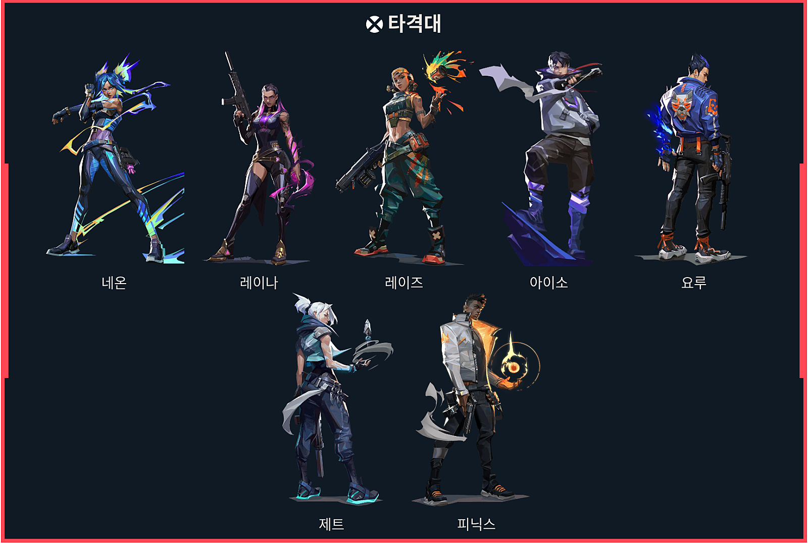
주요 역할
- 가장 먼저 적 사이에 돌진해 시야를 확보하고 교전을 시작한다.
- 적을 먼저 잡아내어 전투에서 팀이 우위를 점하도록 한다.
- 팀이 스파이크를 설치할 수 있도록 사이트나 주요 진입 경로를 확보하고, 팀원들이 안전하게 진입할 수 있도록 지원한다.
해야할 일
- 적 위치 확인 및 정보 공유 - 공격 시작 전과 공격 중에 적의 위치를 빠르게 파악하고 팀에 알린다.
- 팀원과 협력하여 진입 - 팀원과 타이밍을 맞춰 동시에 진입하거나 후방을 챙기며 연계 플레이를 한다.
- 상황 판단 및 빠른 대처 - 적의 예상 밖 움직임에 신속히 대응해 교전 방향을 바꾸거나 후퇴를 결정한다.
- Q - 뜨거운 손:화염구를 장착합니다. 발사하면 일정 시간이 지나거나 땅에 닿은 후 폭발하는 화염구를 던집니다. 폭발 지점에는 일정 시간 유지되는 화염 구역이 생성되어 적에게 피해를 입힙니다. 보조 공격 시 가깝게 투척합니다.뜨거운 손으로 생성된 화염 구역에 본인이 들어가면 체력을 회복합니다.
- E - 커브볼:던지면 휘어져 날아간 후 곧 폭발하는 섬광 구슬을 장착합니다. 발사하면 섬광 구슬이 왼쪽으로 휘어지며 폭발하고 이때 구슬을 바라보는 플레이어는 전부 실명합니다. 보조 공격 시 섬광 구슬이 오른쪽으로 휘어집니다.
- C - 불길:화염 장벽을 장착합니다. 발사하면 앞으로 이동하는 여러 개의 화염을 일렬의 생성하여 시야를 차단하고 통과하는 플레이어에게 피해를 입히는 화염 장벽을 생성합니다. 발사를 길게 누르면 조준점 방향으로 장벽 궤적을 바꿉니다.
- X - 역습:즉시 피닉스의 위치에 표식을 놓습니다. 스킬 사용 도중 죽거나 지속시간이 끝나면 해당 위치에서 최대 체력으로 부활합니다.
- 팀보다 먼저 적 위치를 찾아내고, 적이 어디에 있는지, 몇 명인지, 어떤 움직임을 하는지 파악한다.
- 스파이크 설치 지역과 주요 진입로 같은 위험 구역을 스킬로 사전에 탐색하여, 안전한 이동 경로를 확보한다
- 직접 교전을 피하면서 적을 견제하거나 시야를 확보해 팀이 움직일 때 부담을 줄인다.
- 적 위치와 움직임 관찰 후 보고 - 적을 발견하면 위치와 숫자, 장비 상황 등 상세히 팀에 알린다.
- 팀과의 연계 - 팀원들이 안전하게 움직일 수 있도록 위치 정보를 공유하고, 필요하면 진입 타이밍도 조율한다.
- 위험 회피 및 생존 - 척후대가 죽으면 팀의 정보력이 크게 떨어지므로, 위험할 땐 무리하지 않고 안전하게 후퇴하는 판단도 중요하다.
- Q - 정찰자:태즈매니아 호랑이 장신구를 장착합니다. 발사하면 호랑이를 보내 조종합니다. 조종 중에 발사하면 전방으로 뛰어올라 충돌 시 폭발하며 뇌진탕을 일으키고 직접 타격한 적에게 피해를 입힙니다.
- E - 인도하는 빛:매 장신구를 장착합니다. 발사하면 매를 전방으로 날립니다. 발사를 길게 누르면 조준점 방향으로 매를 유도합니다. 비행 중에 다시 사용하면 매가 섬광으로 변합니다. 섬광은 매가 날아가고 잠시 후 가장 강력해집니다.
- C - 재생:회복 장신구를 장착합니다. 발사를 길게 누르면 정신 집중하여 범위 내에서 모습이 보이는 아군들을 회복시킵니다. 회복 에너지가 바닥날 때까지 재사용할 수 있습니다. 스카이 자신이 회복할 수는 없습니다.
- X - 추적자:추적자 장신구를 장착합니다. 발사하면 추적자 셋을 보내 가장 가까운 적 셋을 쫓습니다. 추적자가 표적에 다다르면 해당 적의 시야를 제한합니다.
- 연막으로 적 시야를 끊어 우리 팀 진입을 도와주거나, 적의 움직임을 방해합니다.
- 타이밍 좋게 스킬을 넣어 우리 팀이 먼저 싸움을 유리하게 시작할 수 있게 도와줍니다.
- 어디를 뚫을지, 어디를 막을지를 정하는 브레인 역할을 합니다
- 공격시 - 진입 전에 주요 시야를 차단해서 팀이 안전하게 들어갈 수 있도록 지원한다.
- 수비 - 적이 오는 루트를 미리 연막/스킬로 봉쇄해서 팀원이 올 때 시간을 벌 수 있도록 해준다.
- 궁극기 활용 -전세 역전, 지역 장악, 시간 끌기 등 전략적인 궁을 사용할 수 있다.
- Q - 소이탄:소이탄 발사기를 장착합니다. 발사하면 바닥에 떨어졌을 때 폭발하는 소이탄을 날려 적에게 피해를 입히는 화염 구역을 생성합니다. 생성된 구역은 긴 시간 유지됩니다.
- E - 공중 연막:전술 지도를 장착합니다. 발사하면 브림스톤의 연막을 퍼뜨릴 위치를 설정합니다. 보조 공격 시 위치 확정 후 연막을 날려 한동안 선택한 지역의 시야를 차단합니다.
- C - 자극제 신호기:자극제 신호기를 즉시 던집니다. 신호기가 떨어진 곳에는 플레이어에게 속사와 속도 상승 효과를 부여하는 영역이 생성됩니다.
- X - 궤도 일격:전술 지도를 장착합니다. 발사하면 선택한 위치에 궤도 일격 레이저를 쏘아 해당 영역에 있는 플레이어에게 큰 지속 피해를 입힙니다.
- 스킬을 배치해 적이 들어오는 경로를 봉쇄하거나 늦춥니다. 수비 시, 한 명이 사이트를 혼자 지킬 수 있게 해줍니다.
- 설치형 장비(트랩, 카메라 등)로 팀의 뒤를 안전하게 확인합니다. 공격 중에도 “뒤치기 오는 적”을 자동 감지합니다.
- 스킬로 적의 이동을 강제하거나, 특정 위치에 오래 머물게 만듭니다. 정보 수집 + 시간 지연으로 전술적 우위를 확보합니다.
- 공격시 - 뒤치기 감시, 설치 후 스파이크를 지킨다다.
- 수비시 - 트랩/장비로 적 진입 지점 감시 + 시간 끈다.
- 교전 중 -팀 뒤를 지켜주고, 필요시 힐이나 보조 스킬 사용한다.
- Q - 둔화 구슬:둔화 구슬을 장착합니다. 발사하면 땅에 닿은 후 폭발하여 일정 시간 동안 둔화 영역을 생성하는 구슬을 던집니다. 둔화 영역에 있는 플레이어는 속도가 느려집니다.
- E - 회복 구슬:회복 구슬을 장착합니다. 피해를 입은 아군을 조준한 후 발사하면 해당 아군이 서서히 체력을 회복합니다. 세이지가 피해를 입었을 때 보조 공격 시 자신의 체력을 서서히 회복합니다.
- C - 장벽 구슬:장벽 구슬을 장착합니다. 발사하면 단단한 장벽을 설치합니다. 보조 공격시 장벽이 회전합니다.
- X - 부활:부활 스킬을 장착합니다. 죽은 아군을 조준한 후 발사하면 해당 아군이 부활하기 시작합니다. 짧은 정신 집중이 끝나면 아군이 최대 체력으로 되살아납니다.
타격대 추천 요원 - 피닉스
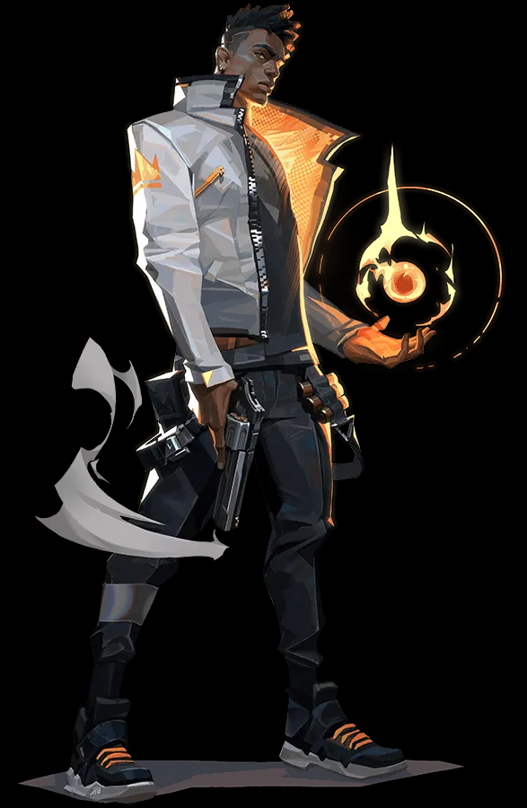
타격대 역할의 요원으로, 스스로 치유하며 교전할 수 있는 능력이 있어 초보자에게 적합합니다.
직접 진입해서 싸우는 스타일로 기본적인 FPS 감각과 스킬 연계를 배우기에 좋습니다.
주요 스킬:
척후대
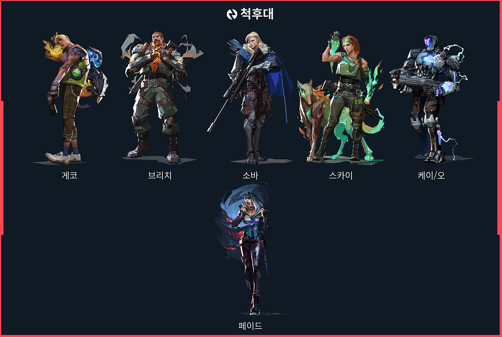
주요 역할
해야할 일
척후대 추천 요원 - 스카이
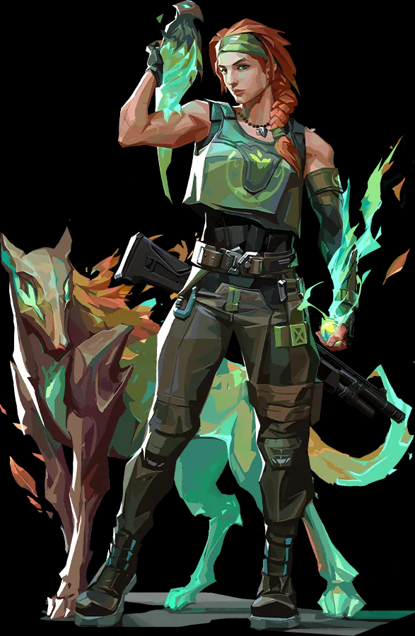
척후대 + 서포터 역할을 겸하는 요원으로, 정보 수집, 아군 힐, 적 시야 차단까지 다방면에서 활약할 수 있습니다.
스킬이 직관적이고, 팀 기여도가 높아 초보자도 쉽게 성과를 낼 수 있습니다.
주요 스킬:
전략가
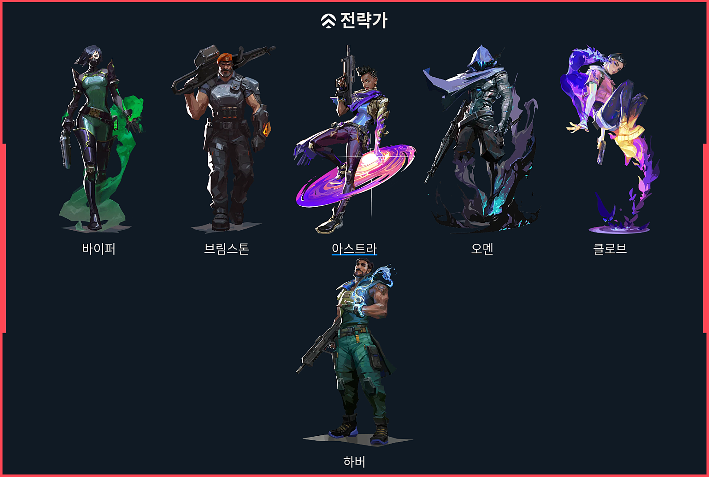
주요 역할
해야할 일
전략가 추천 요원 - 브림스톤
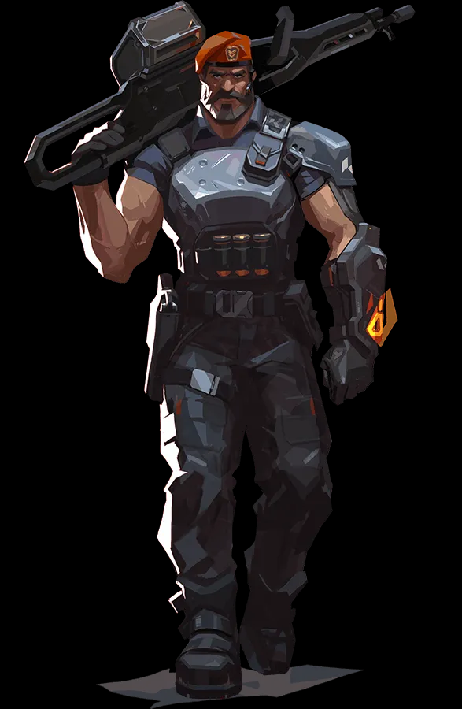
전략가의 역할을 겸하는 요원으로,정확하고 간단한 연막 스킬과 강력한 궁극기를 가진 클래식한 전략가 요원입니다.
스킬이 직관적이고 조작이 쉬워서, 처음 전략가를 배우는 유저에게 가장 적합해합니다.
주요 스킬:
감시자
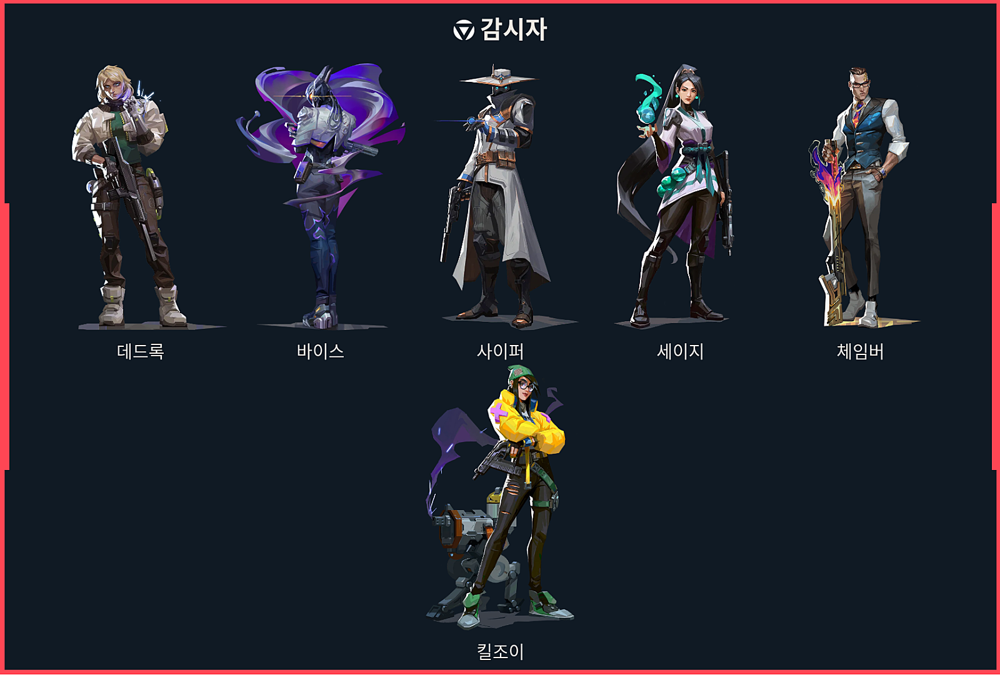
주요 역할
해야할 일
감시자 추천 요원 - 세이지
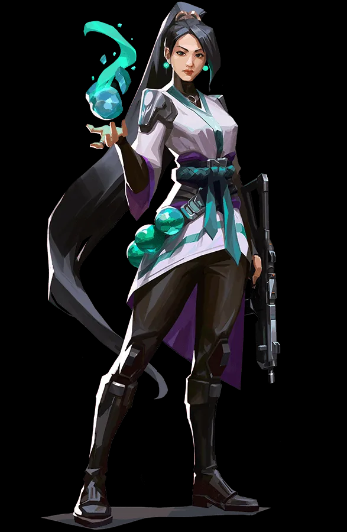
감시자 역할을 겸하는 서포터 요원으로, 힐과 벽 설치를 통해 팀의 생존과 거점 방어를 돕는 요원입니다.
스킬이 직관적이고, 팀원과 함께 움직이며 안정적인 플레이가 가능해 입문자에게 매우 적합합니다.
주요 스킬:
기본 게임 용어
상점 관련 용어
- 바이 - 돈을 많이 쓰더라도 스킬과 장비를 좋게 사자
- 풀바이 - 갖고 있는 돈을 다 털어서 최대한으로 무장하자
- 이코 - 제대로 된 바이가 안 될것 같으니 다음 라운드에 바이 할 정도의 돈을 남겨두고 구매하자
공격 관련 용어
- 러쉬 - 게임이 시작하자마자 빠르게 달려서 적 사이트를 뚫자는 것을 의미 합니다
- 디폴트 - 시간을 충분히 끌고, 상대가 전진 나오는 걸 잡고 가자는 것을 의미 합니다
- 컨택 - 소리를 내지 않고, 천천히 사이트에 집입하자는 것을 의미합니다
- 럴킹 - 본대에 합류하지 않고, 미드나 반대 사이트를 통해 적의 뒤를 잡는 것을 의미합니다.
수비 관련 용어
- 홀딩 - 사이트를 비우지 않고, 적이 들어올 때까지 지키는 것을 의미 합니다.
- 디퓨즈/해체 - 스파이크를 해체 하는 것을 의미합니다.
- 리테이크 - 적이 사이트를 차지하게 두고, 전부 빠져서 한 번에 사이트 재탈환을 시도하는 것을 의미합니다.
- 전진 - 역으로 상대가 오는 곳을 보며 상대 진영 쪽으로 나아가는 것을 의미 합니다
추천 무기
보조무기
- 클래식 - 기본 지급 무기, 단발과 점사 모두 가능 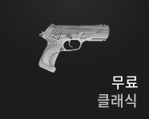
- 프렌지 - 연사 가능, 근거리에서 유리 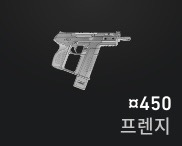
- 셰리프 - 고화력 권총, 헤드샷 시 높은 데미지 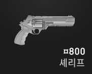
소총
- 팬텀 - 중거리에서 뛰어난 안정성과 연사력 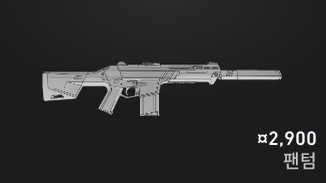
- 밴달 - 거리 상관없이 일정 데미지, 헤드샷 결정력 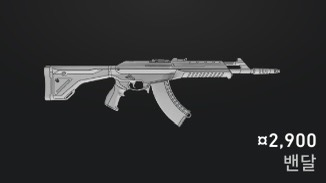
기관단총
- 스펙터 - 저렴하면서도 근·중거리에서 효율적 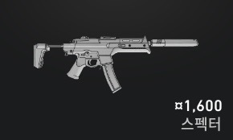
- 스팅어 - 빠른 연사, 근거리 돌진 스타일에 적합 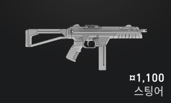
저격소총
- 오퍼레이터 - 한 발로 적 처치 가능, 고가 무기 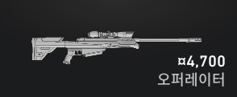